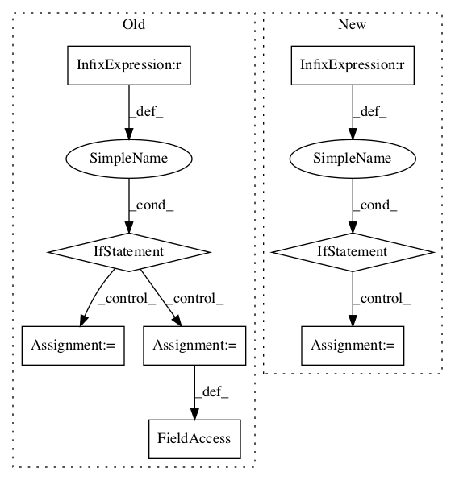

8cdbb1637b140c01f431831e7b2c2a63afc96209,kapre/time_frequency.py,Spectrogram,__init__,#Spectrogram#Any#Any#Any#Any#Any#Any#Any#,70
Before Change
n_hop = n_dft // 2
assert image_data_format in ("default", "channels_first", "channels_last")
if image_data_format == "default":
self.image_data_format = K.image_data_format()
else:
self.image_data_format = image_data_format
self.n_dft = n_dft
assert n_dft % 2 == 0
self.n_filter = n_dft // 2 + 1
self.trainable_kernel = trainable_kernelAfter Change
):
super(STFT, self).__init__(**kwargs)
if win_length is None:
win_length = n_fft
if hop_length is None:
hop_length = win_length // 4
if window_fn is None:
window_fn = tf.signal.hann_windowIn pattern: SUPERPATTERN
Frequency: 3
Non-data size: 8
Instances Project Name: keunwoochoi/kapre
Commit Name: 8cdbb1637b140c01f431831e7b2c2a63afc96209
Time:
Author: null
File Name: kapre/time_frequency.py
Class Name: Spectrogram
Method Name: __init__
Project Name: asyml/texar
Commit Name: da37438735fd4b845bb0874562bd071865c480bb
Time:
Author: null
File Name: texar/modules/encoders/rnn_encoders.py
Class Name: RNNEncoderBase
Method Name: __init__
Project Name: MorvanZhou/Reinforcement-learning-with-tensorflow
Commit Name: 1a292afa66250814e3fa3fab26e4f7e5140baf31
Time:
Author: null
File Name: contents/12_Proximal_Policy_Optimization/simply_PPO.py
Class Name: PPO
Method Name: update